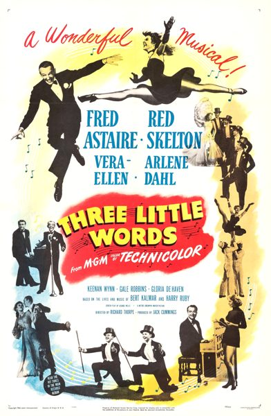

Three Little Words

Starring: Fred Astaire, Red Skelton, Vera-Ellen
Director: Richard Thorpe
Writer: George Wells
Producer: Jack Cummings
Three Little Words is a 1950 American biographical musical comedy film directed by Richard Thorpe from a screenplay by George Wells. It stars Fred Astaire as lyricist Bert Kalmar and Red Skelton as composer Harry Ruby, Vera-Ellen and Arlene Dahl, with Debbie Reynolds in a small role as singer Helen Kane and Gloria DeHaven as her own mother, Mrs. Carter DeHaven.
Trivia
- Nominated for: Academy Award for Best Original Musical Score.
- The film was one of Astaire's favorites.
- Three Little Words takes fewer liberties with the facts than many Hollywood biopics, and Astaire and Skelton's portrayal of the songwriting partnership is considered psychologically accurate.
- Adding to the film's appeal is the quality acting and mutual chemistry between Skelton and Astaire, as well as some fine comedy touches from Skelton.
Previous Showings
13 Runs • 7 Festivals
All runs on record (13):
- July 17 - 21, 1987w/ Flying Down to Rio, The Belle of New York, The Barkleys of Broadway
- December 13 - 14, 1990w/ The Belle of New York
- April 4 - 7, 1992w/ Singin' in the Rain
- February 3 - 5, 1993w/ The Belle of New York
- August 7 - 8, 1997w/ Tin Pan Alley
- June 10 - 11, 2001MORE HOLLYWOOD MUSICALS 1940-1950w/ Life Begins for Andy Hardy
- November 20 - 22, 2002Fall Folliesw/ Silk Stockings
- January 14 - 16, 2005w/ The Belle of New York
- July 15, 2007Summer 2007, including Films Starring Fred Astairew/ Royal Wedding
- June 30 - July 2, 2010Summer 2010w/ You Were Never Lovelier
- July 11 - 13, 2012Summer 2012w/ Words and Music
- June 7 - 8, 2014Fred Astaire 2014w/ Holiday Inn
- April 5 - 7, 2024Fred Astaire 2024w/ Royal Wedding